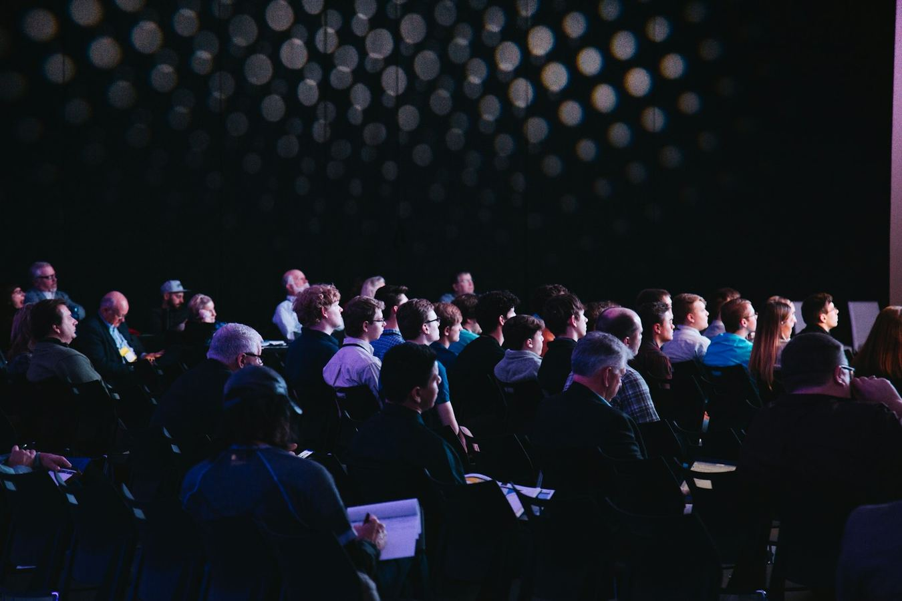
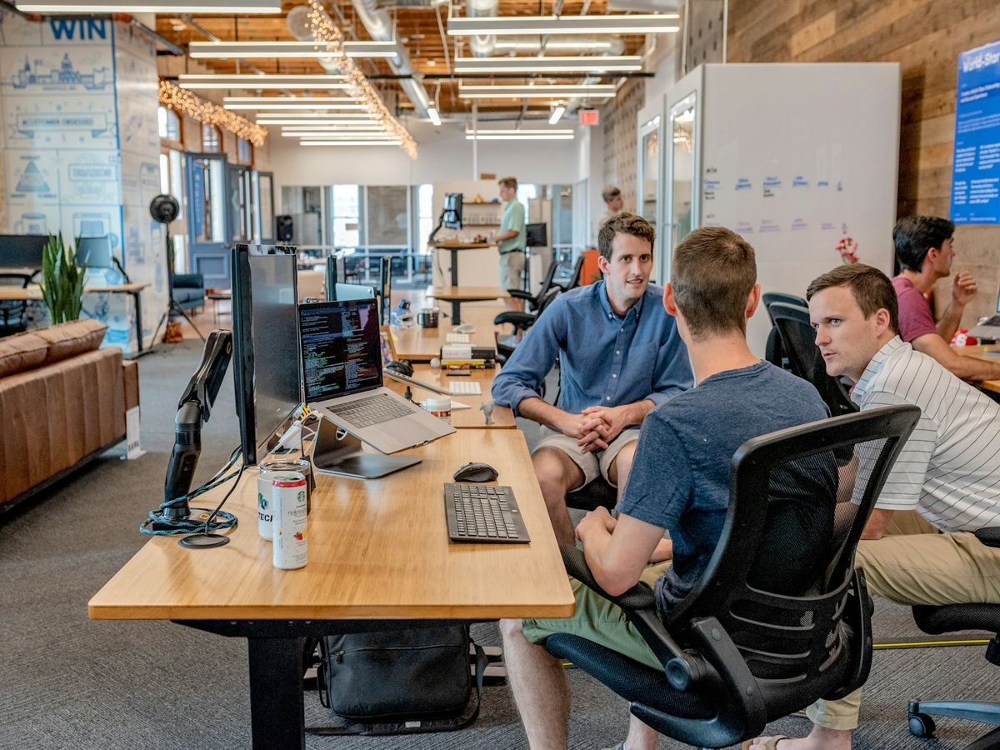
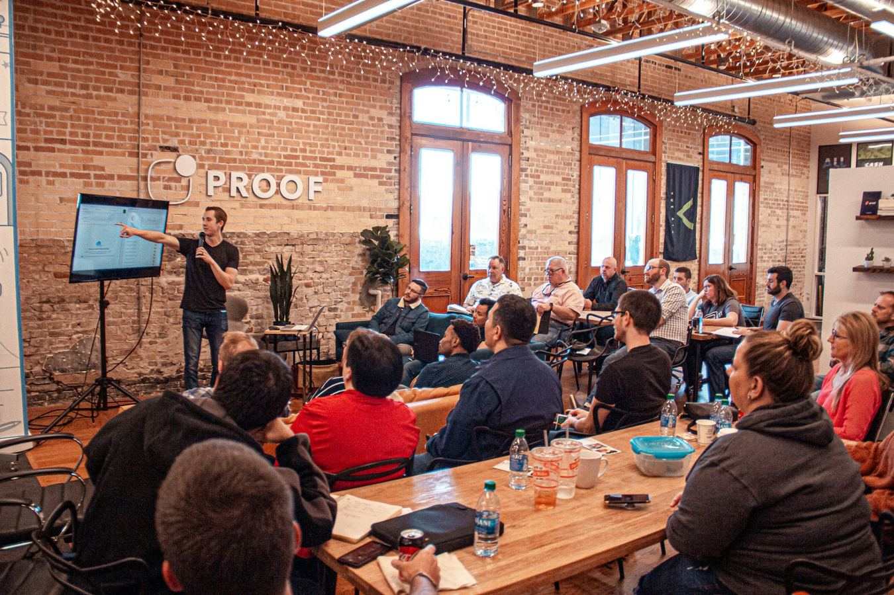
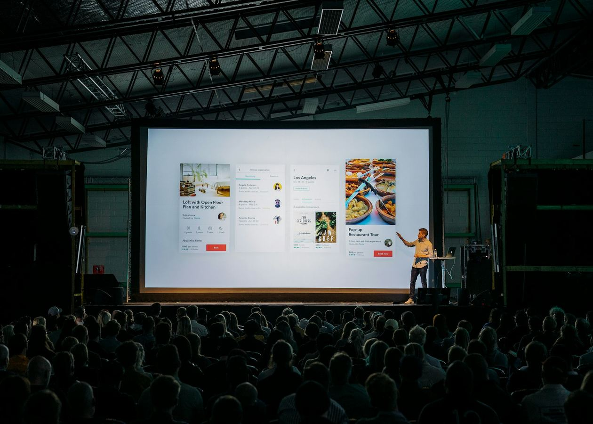

OFFLINE · TRADE SHOW
EoS Foundation @ Embedded World NA 2026
Booth + main-stage talks on the eos-platform 1.0 release, INT4 inference on Cortex-M85, and the new Industry-Safety working group. Members get 30% off registration.
Foundation-hosted and partner events across the year — Embedded World NA, ESWEEK, Embedded Summit, Embedded India, and partner webinars with Embedded.com, Toradex, Generis Group, and Embedded Online Conference. Want to host an EoS session at your event? Get in touch →

Booth + main-stage talks on the eos-platform 1.0 release, INT4 inference on Cortex-M85, and the new Industry-Safety working group. Members get 30% off registration.
Live walkthrough of the EAI 0.9 INT4 runtime — quantization choices, the block-streamed scheduler, and a live demo running on real STM32H7 hardware. Q&A.
Hands-on workshop covering the full eos-platform stack on Toradex Verdin modules: signed boot via eBoot, the EoS RTOS profile, and on-device inference with EAI. Bring a laptop.

Launch of the EoS Foundation India Chapter, a regional working group focused on cost-optimized embedded AI for emerging markets. Featuring talks, demos, a hackathon, and a community dinner.

Foundation-hosted: annual members assembly, working group reports, governance vote, board elections, and the State of the Ecosystem briefing. Open to all members and observers.

Editor-led fireside chat with the ENI team on the 1,024-channel deterministic pipeline, open-data licensing, and the new Neural Interface Standards working group.
Closed-door strategic roundtable on root-of-trust standardization, attestation interoperability, and the security obligations of embedded AI platforms. Foundation invited as panel.
Joint paper presentation with two academic groups: a machine-checked proof of EoS RTOS context-switch correctness on Cortex-M and RV32. Followed by a foundation-hosted reception.

Foundation president keynote on the EoS roadmap, the Embedded AI Ethics working group's first public draft, and the launch of the Safety-Certified subset.
The EmbeddedOS Foundation partners with publishers, conference organizers, hardware vendors, and academic societies to bring open embedded AI research to a global audience. We bring speakers, technical content, and a live demo platform; you bring the audience.